-
 YOASOBIyoasibi是2019年結成的日本雙人音樂組合，由使用VOCALOID作曲的作曲家Ayase、以及本業為創作歌手的ikura組成。 其特色為將在日本索尼音樂娛樂所經營的小說及插畫網站的原作小說音樂化。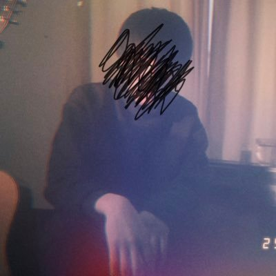なとりなとり起手的平台位於TikTok，於2021年5月開始上傳自編歌曲，到2022年為止發布了30多首短版音樂影片。其中2022年5月發布的《Overdose》反響巨大，なとり這位歌手也跟著被人熟知，並於同年9月將完整版作為限量版單曲發行並在YouTube上發布。並 截至2023年1月，《Overdose》總播放量已突破1.5億次。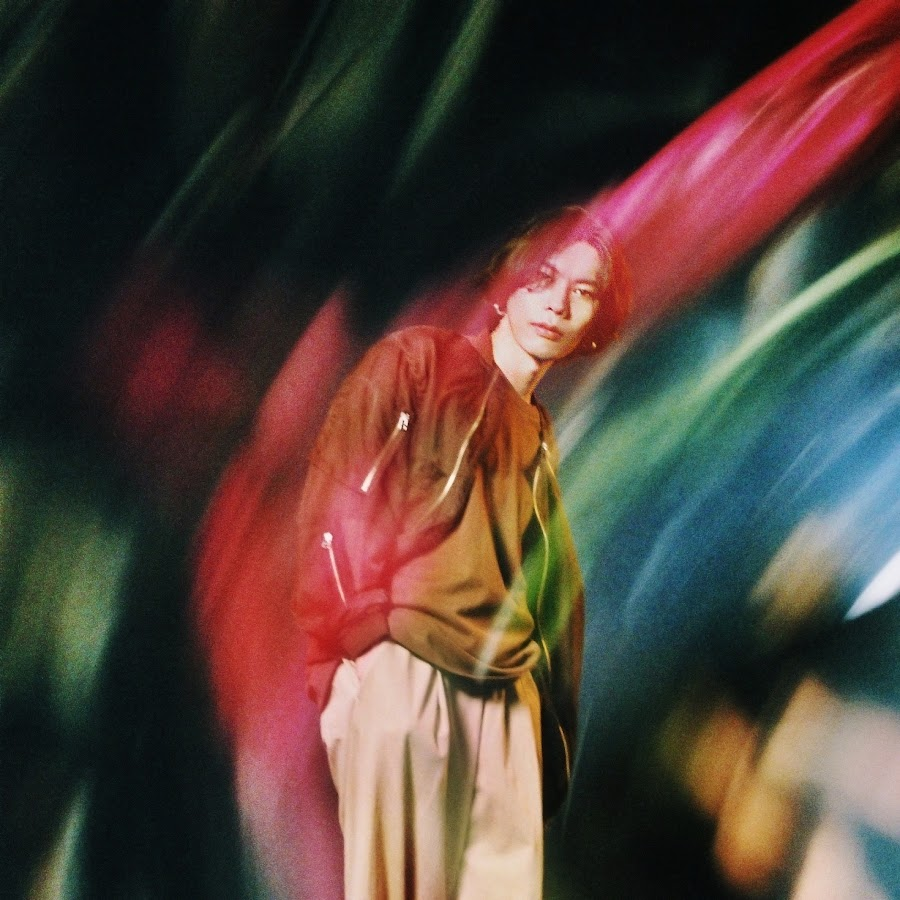米津玄師米津玄師是音樂家、創作歌手、插畫家、攝影師、舞者，為近年日本流行音樂的代表歌手之一。從2009年左右以「Hachi（ハチ）」的名義在網際網路發表以VOCALOID製作的音樂，2012年開始以本名發布專輯《diorama》，擁有令人驚嘆的多才多藝。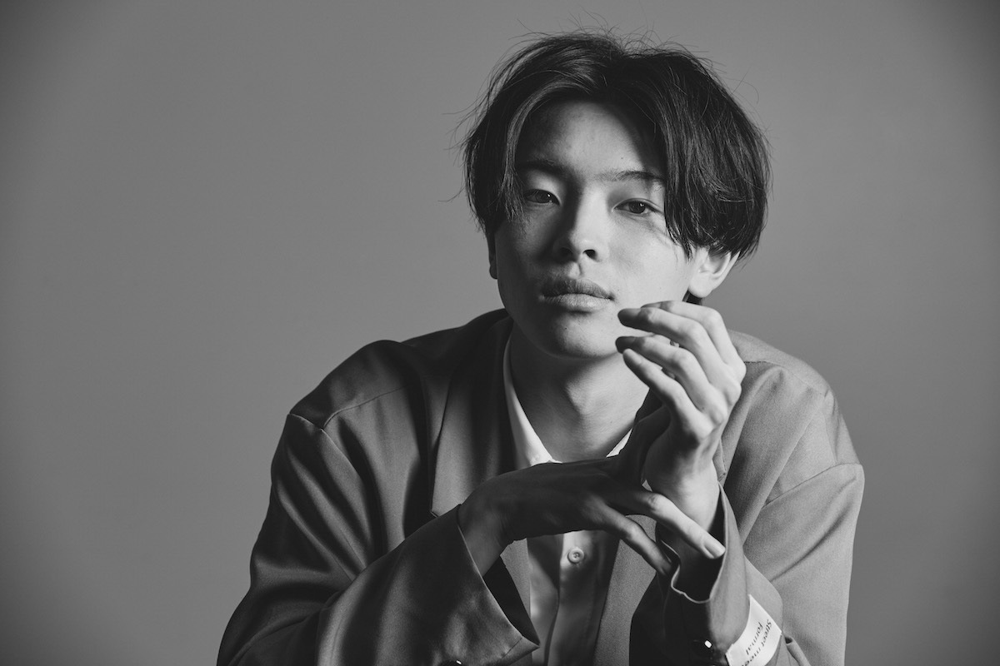ImaseImase為日本新星創作歌手，在2020年11月購買吉他開始進行音樂活動，並此前完全沒有樂器的經驗。於2021年5月開始在TikTok上傳自創歌曲，於2021年12月19日發行了《Have a nice day》並正式出道，從開始到出道只用了1年的時間成長迅速。於2022年8月19日發行《Night Dancer》使imase在音樂創作上更上一層樓，該歌曲也是J-POP史上首次在韓國Melon音樂榜上進入TOP199。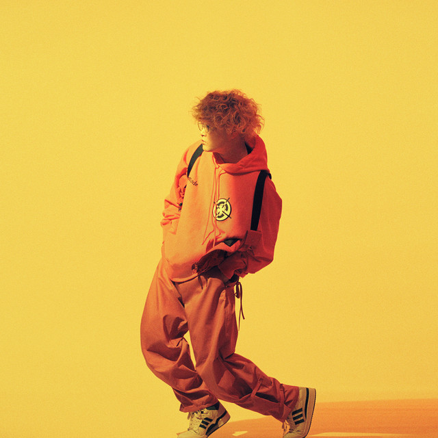VaudyVaundy為日本男性創作型歌手。 所屬的唱片公司為Stardust records旗下的Vaundy Artwork Studio。 於2019年6月，開始在YouTube上投稿歌曲 ，並在11月29日，發行首張單曲《東京フラッシュ》。 2020年1月22日，發行第二張單曲《不可幸力》。於2022年12月31日，參加第73屆NHK紅白歌會，演唱歌曲《怪獣の花唄》，並與milet、Aimer、幾田莉拉共同演唱歌曲《面影》(おもかげ)。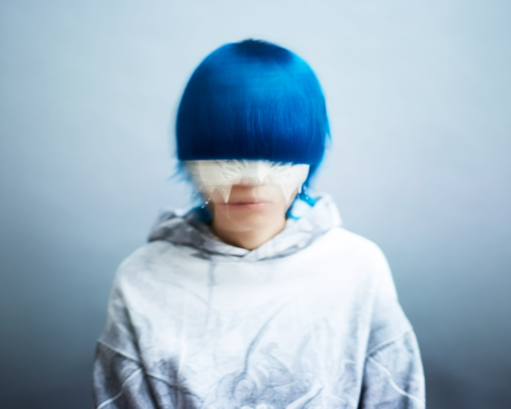yama2018年3月，以yama為藝名發佈翻唱歌曲並開始活動。 於2019年，使用“山上”的名義與VOCALOID製作人組成音樂組合BIN。 在2020年，發佈首支個人原創歌曲《春を告げる》，並引起了一定的熱度。在2020年10月21日，通過索尼音樂旗下唱片公司發佈數位單曲《真っ白》，從而主流出道。2021年2月10日，發佈首張個人CD單曲輯《麻痺》。9月1日，推出首張個人專輯《the meaning of life》。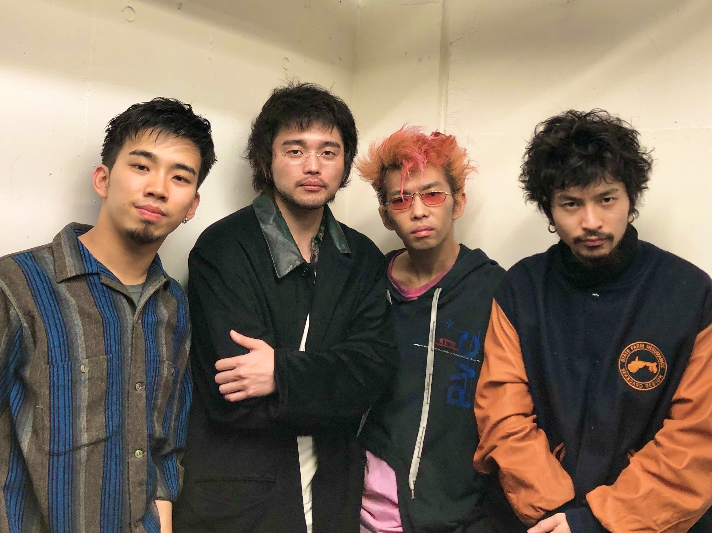King GnuKing Gnu是一個日本4人搖滾樂隊，於2017年以常田大希為核心結成。現為日本索尼音樂旗下藝人。2019 日本話題新團，被譽為鬼才集團、J-POP 的革新派。其真正開始爆紅和被大眾認識是在2019年1月為《Innocence 冤罪律師》演唱〈白日〉，並於發布後迅速成為破譯歌曲，於2019年12月31日首次登上紅白舞台，成為日本知名樂團之列。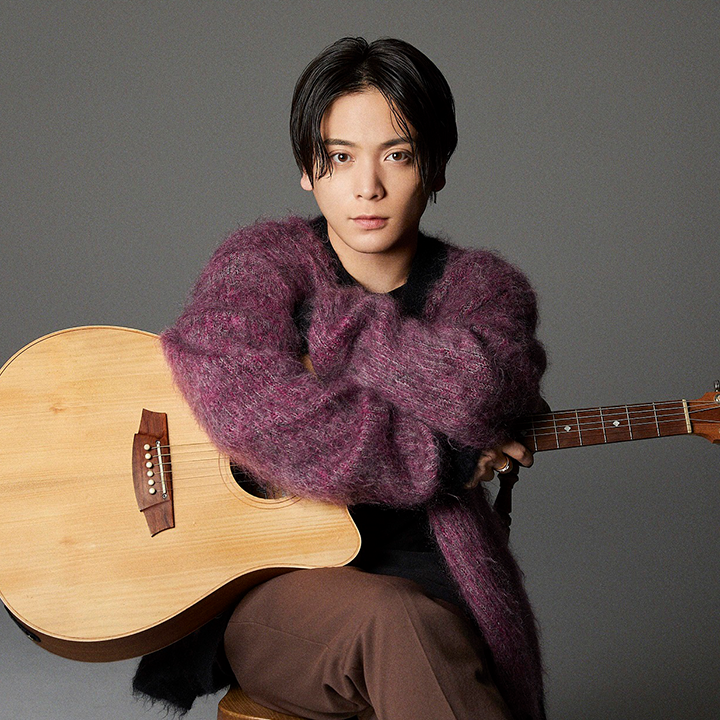優里優里（日語：優里／ゆうり）是日本男性創作歌手、YouTuber。其所屬經紀公司為日本索尼音樂娛樂。優里本來是一個樂團的主唱，在2019年5月樂團解散了之後就一個人進行音樂活動，主要是在街頭演唱。當時他還沒有自創曲，表演主要都是翻唱知名的作品，累積了一小群的死忠粉絲。之後推出的〈捉迷藏〉與〈乾燥花〉兩首破億神曲後，從一位在澀谷路邊自彈自唱普通人到現今日本知名歌手，創造出奇蹟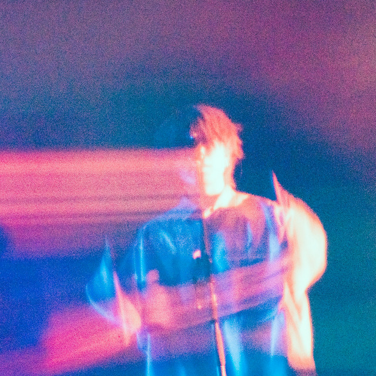EveEve是日本的創作歌手。2009年以網路為中心展開活動。唱片公司為TOY'S FACTORY。2009年10月1日開始以唱見的身分在niconico動畫上展開活動。其後加入樂團「einie」，於2012年至2013年間活動。2014年，由6名唱見所構成的歌手組合「Riot of Color」成立，Eve為主要成員之一。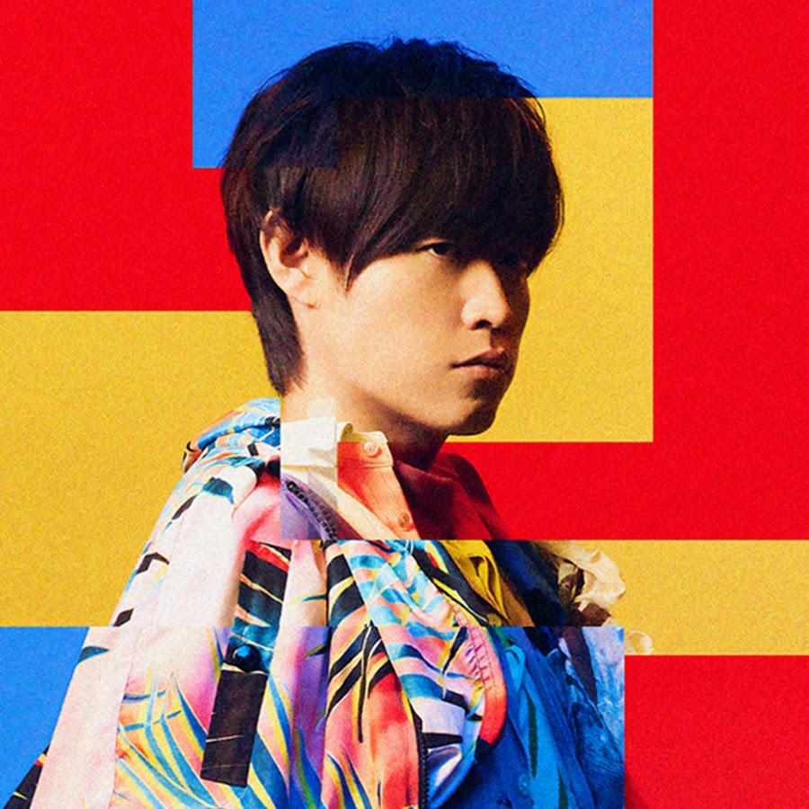Tani YuukiTani Yuuki（日語：タニ ユウキ）是一名日本創作歌手，以一首出道曲『Myra』瞬間爆紅，在YOUTUBE的播放次數已來到2000多萬點閱率，之後於2021年5月26日發布的『W/X/Y』更是把Tani Yuuki推上高，現今累積觀看數達上億，於2022年9月21日的『もう一度』也累績了千萬觀看。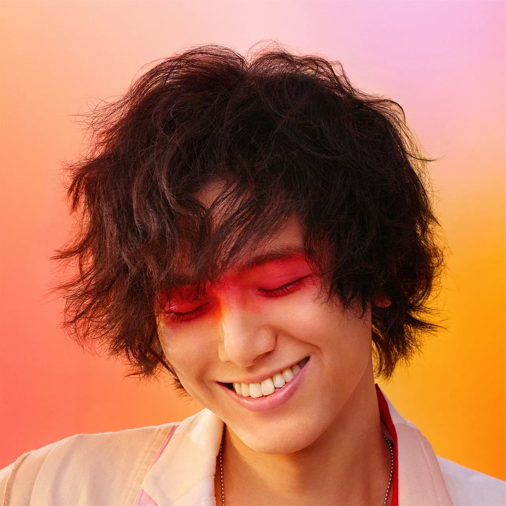藤井風藤井風（日語：藤井 風／ふじい かぜ）是一名日本男性創作歌手。藤井風於日本岡山縣淺口郡里莊町出生，童年時因父親影響而接觸音樂，三歲開始學鋼琴，並從中學開始在YouTube上傳翻彈鋼琴與翻唱歐美流行歌曲的影片，拍攝地點在自家的咖啡店。其後獲音樂界人士發掘，於2019年赴往東京正式出道，並在2020年發行首張專輯《HELP EVER HURT NEVER》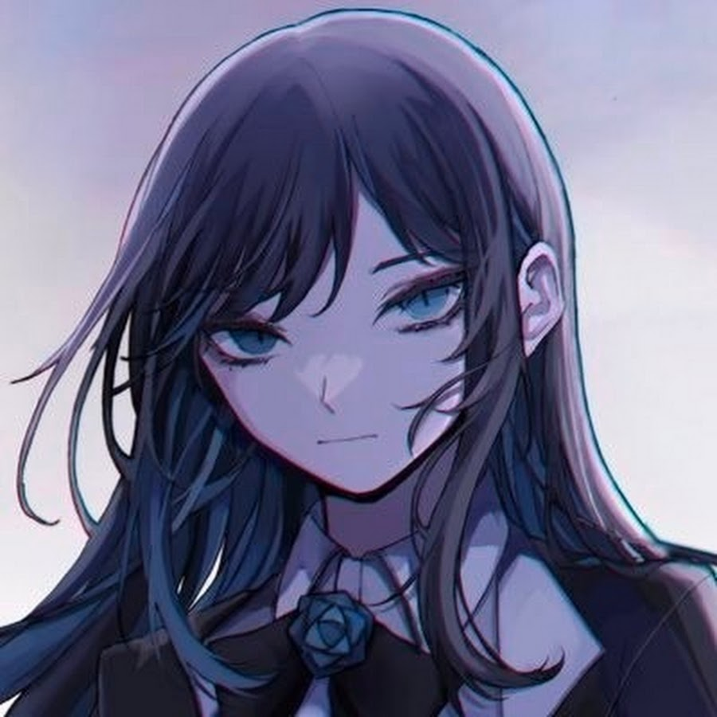AdoAdo藝名源於日本古典表演藝術「狂言」中配角「アド」（Ado）一詞。在早期訪問中她提到，小學的時候，第一次聽到「シテ」（仕手，主角之意）和「アド」（脇，與主角對答的配角之意，念作「Ado」）這兩個詞，是在一堂關於狂言劇目「柿山伏」的課上，「Ado」聽起來聲韻很酷，所以才選擇了這詞，且「ado 」還有「辛苦」、「騷動」、「麻煩 」的意思，她本人自認與自己個性很合。首張專輯就並以「狂言」命名。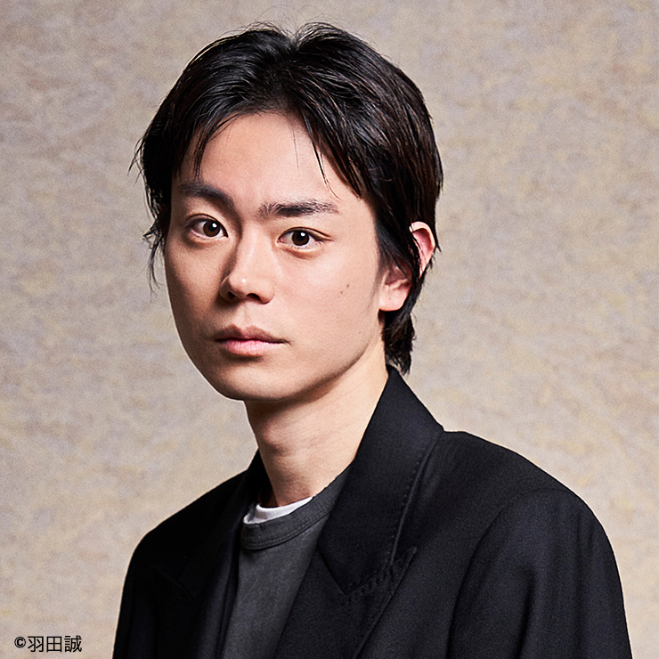菅田將暉菅田將暉（Suda Masaki），於2009年在假面騎士系列劇集《假面騎士W》中開始他的演員生涯。從那時起，他在電影、電視劇、廣告等多個領域展現出年輕演員的實力，活躍於日本娛樂界。同時，他亦跨足音樂界向影視歌三棲發展。
YOASOBIyoasibi是2019年結成的日本雙人音樂組合，由使用VOCALOID作曲的作曲家Ayase、以及本業為創作歌手的ikura組成。 其特色為將在日本索尼音樂娛樂所經營的小說及插畫網站的原作小說音樂化。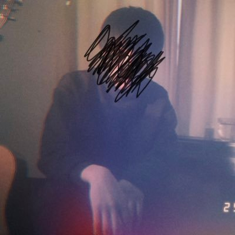なとりなとり起手的平台位於TikTok，於2021年5月開始上傳自編歌曲，到2022年為止發布了30多首短版音樂影片。其中2022年5月發布的《Overdose》反響巨大，なとり這位歌手也跟著被人熟知，並於同年9月將完整版作為限量版單曲發行並在YouTube上發布。並 截至2023年1月，《Overdose》總播放量已突破1.5億次。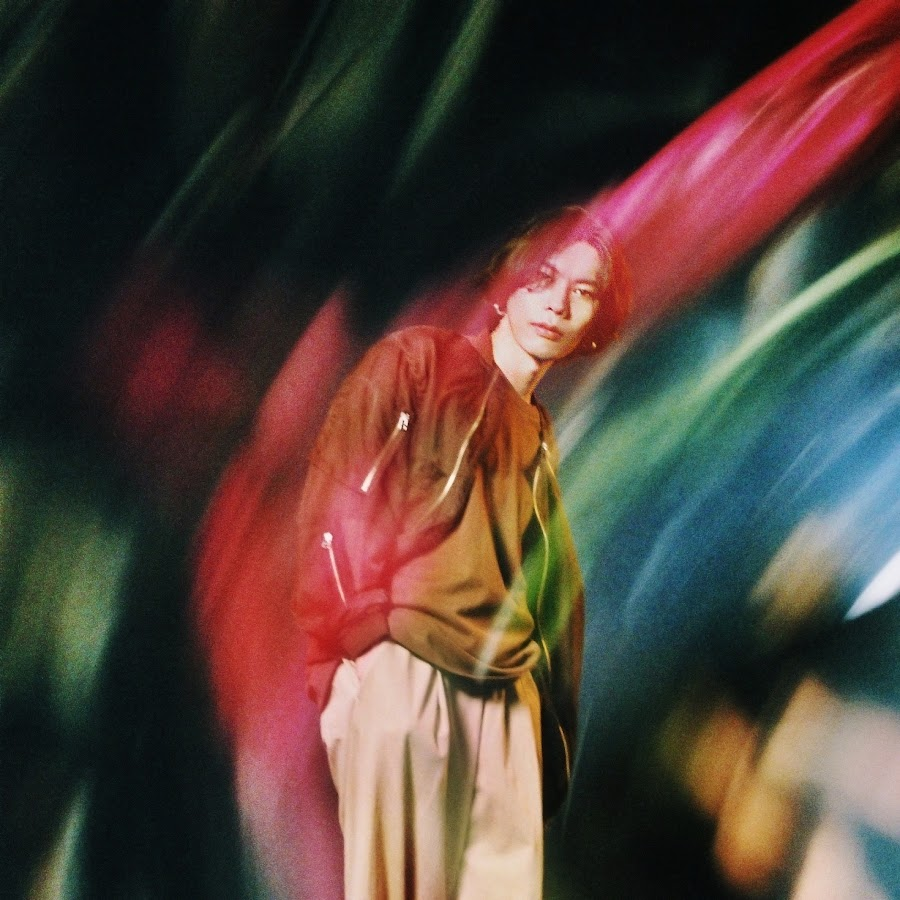米津玄師米津玄師是音樂家、創作歌手、插畫家、攝影師、舞者，為近年日本流行音樂的代表歌手之一。從2009年左右以「Hachi（ハチ）」的名義在網際網路發表以VOCALOID製作的音樂，2012年開始以本名發布專輯《diorama》，擁有令人驚嘆的多才多藝。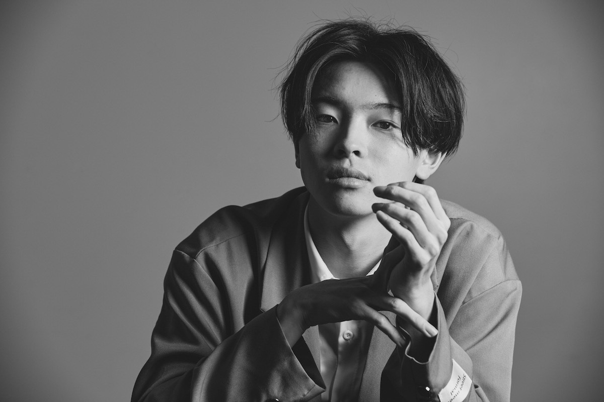ImaseImase為日本新星創作歌手，在2020年11月購買吉他開始進行音樂活動，並此前完全沒有樂器的經驗。於2021年5月開始在TikTok上傳自創歌曲，於2021年12月19日發行了《Have a nice day》並正式出道，從開始到出道只用了1年的時間成長迅速。於2022年8月19日發行《Night Dancer》使imase在音樂創作上更上一層樓，該歌曲也是J-POP史上首次在韓國Melon音樂榜上進入TOP199。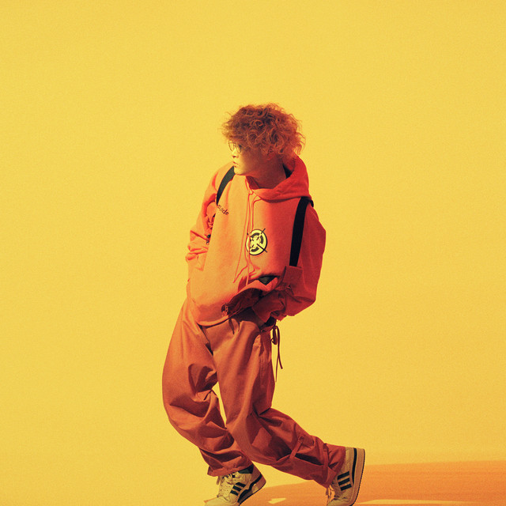VaudyVaundy為日本男性創作型歌手。 所屬的唱片公司為Stardust records旗下的Vaundy Artwork Studio。 於2019年6月，開始在YouTube上投稿歌曲 ，並在11月29日，發行首張單曲《東京フラッシュ》。 2020年1月22日，發行第二張單曲《不可幸力》。於2022年12月31日，參加第73屆NHK紅白歌會，演唱歌曲《怪獣の花唄》，並與milet、Aimer、幾田莉拉共同演唱歌曲《面影》(おもかげ)。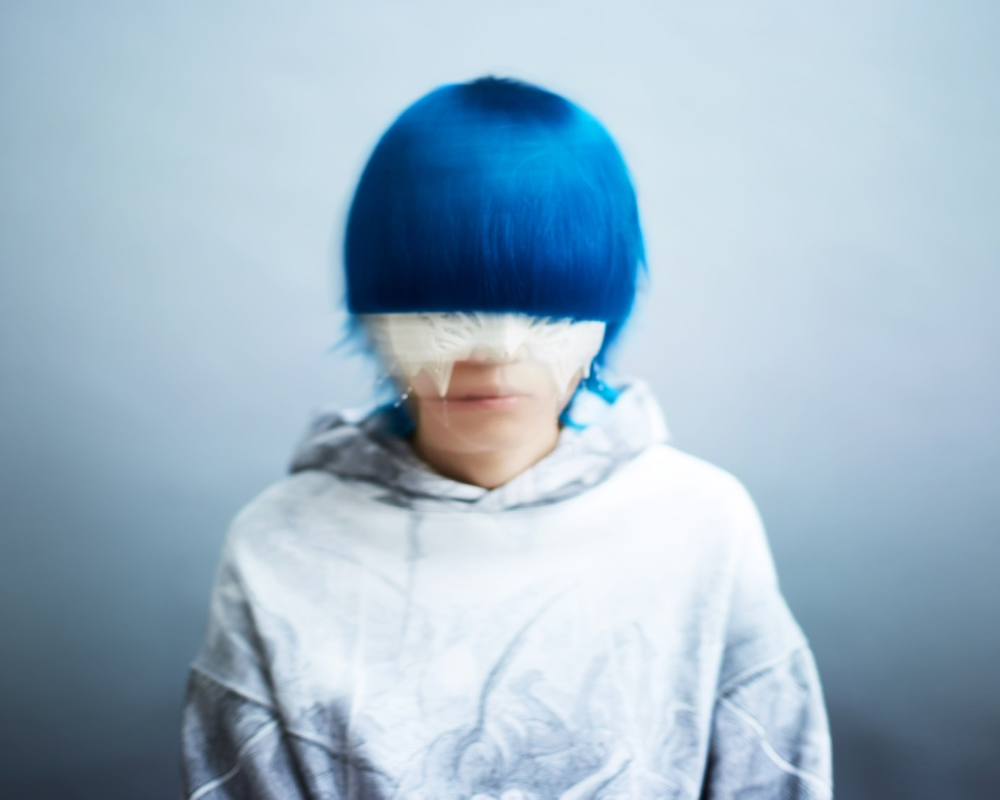yama2018年3月，以yama為藝名發佈翻唱歌曲並開始活動。 於2019年，使用“山上”的名義與VOCALOID製作人組成音樂組合BIN。 在2020年，發佈首支個人原創歌曲《春を告げる》，並引起了一定的熱度。在2020年10月21日，通過索尼音樂旗下唱片公司發佈數位單曲《真っ白》，從而主流出道。2021年2月10日，發佈首張個人CD單曲輯《麻痺》。9月1日，推出首張個人專輯《the meaning of life》。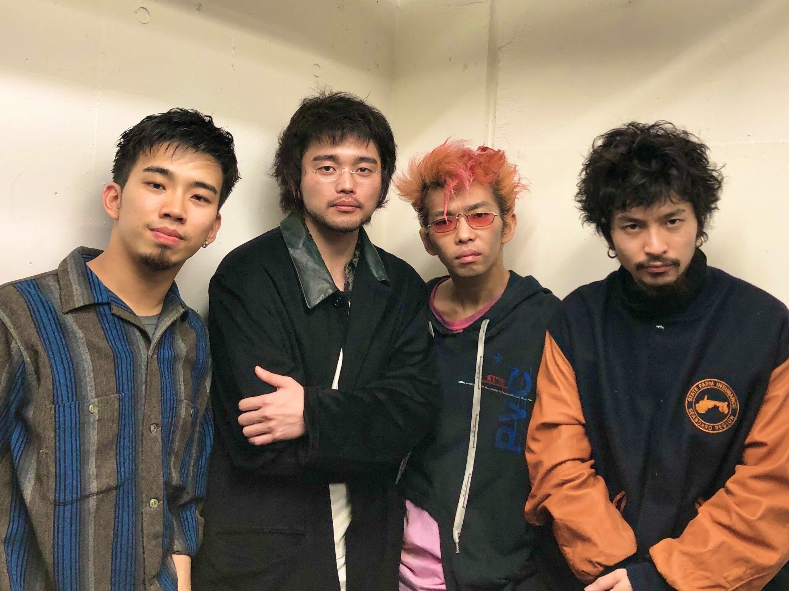King GnuKing Gnu是一個日本4人搖滾樂隊，於2017年以常田大希為核心結成。現為日本索尼音樂旗下藝人。2019 日本話題新團，被譽為鬼才集團、J-POP 的革新派。其真正開始爆紅和被大眾認識是在2019年1月為《Innocence 冤罪律師》演唱〈白日〉，並於發布後迅速成為破譯歌曲，於2019年12月31日首次登上紅白舞台，成為日本知名樂團之列。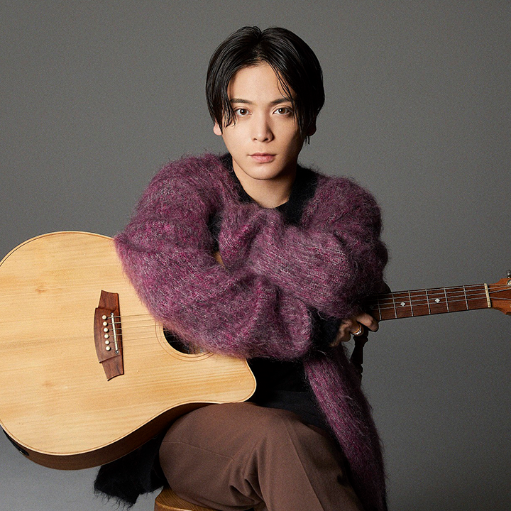優里優里（日語：優里／ゆうり）是日本男性創作歌手、YouTuber。其所屬經紀公司為日本索尼音樂娛樂。優里本來是一個樂團的主唱，在2019年5月樂團解散了之後就一個人進行音樂活動，主要是在街頭演唱。當時他還沒有自創曲，表演主要都是翻唱知名的作品，累積了一小群的死忠粉絲。之後推出的〈捉迷藏〉與〈乾燥花〉兩首破億神曲後，從一位在澀谷路邊自彈自唱普通人到現今日本知名歌手，創造出奇蹟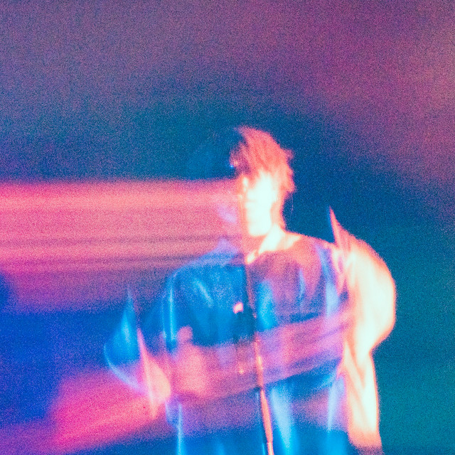EveEve是日本的創作歌手。2009年以網路為中心展開活動。唱片公司為TOY'S FACTORY。2009年10月1日開始以唱見的身分在niconico動畫上展開活動。其後加入樂團「einie」，於2012年至2013年間活動。2014年，由6名唱見所構成的歌手組合「Riot of Color」成立，Eve為主要成員之一。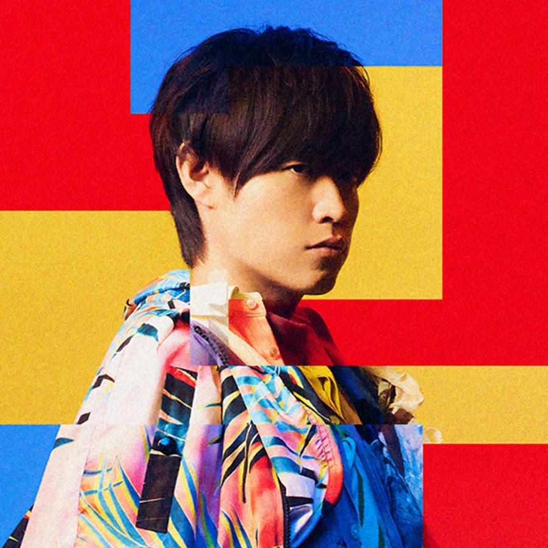Tani YuukiTani Yuuki（日語：タニ ユウキ）是一名日本創作歌手，以一首出道曲『Myra』瞬間爆紅，在YOUTUBE的播放次數已來到2000多萬點閱率，之後於2021年5月26日發布的『W/X/Y』更是把Tani Yuuki推上高，現今累積觀看數達上億，於2022年9月21日的『もう一度』也累績了千萬觀看。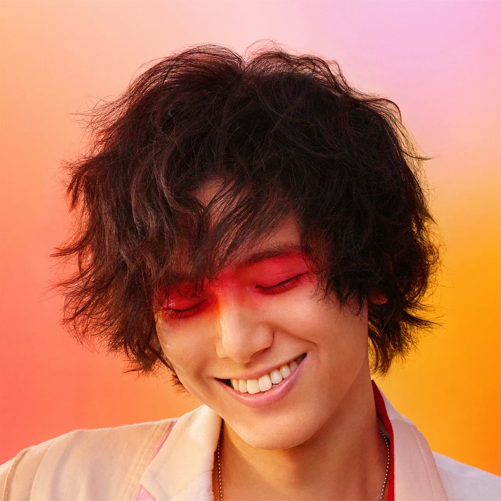藤井風藤井風（日語：藤井 風／ふじい かぜ）是一名日本男性創作歌手。藤井風於日本岡山縣淺口郡里莊町出生，童年時因父親影響而接觸音樂，三歲開始學鋼琴，並從中學開始在YouTube上傳翻彈鋼琴與翻唱歐美流行歌曲的影片，拍攝地點在自家的咖啡店。其後獲音樂界人士發掘，於2019年赴往東京正式出道，並在2020年發行首張專輯《HELP EVER HURT NEVER》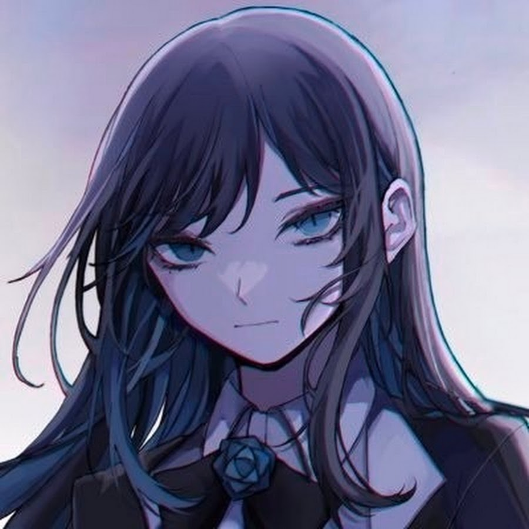AdoAdo藝名源於日本古典表演藝術「狂言」中配角「アド」（Ado）一詞。在早期訪問中她提到，小學的時候，第一次聽到「シテ」（仕手，主角之意）和「アド」（脇，與主角對答的配角之意，念作「Ado」）這兩個詞，是在一堂關於狂言劇目「柿山伏」的課上，「Ado」聽起來聲韻很酷，所以才選擇了這詞，且「ado 」還有「辛苦」、「騷動」、「麻煩 」的意思，她本人自認與自己個性很合。首張專輯就並以「狂言」命名。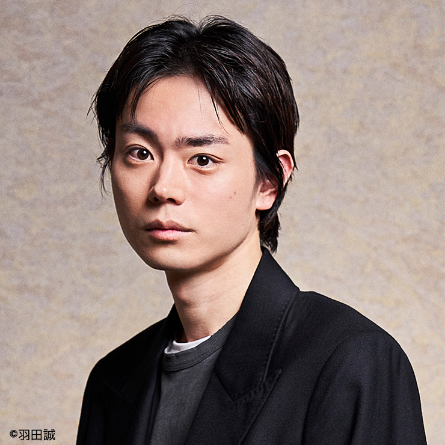菅田將暉菅田將暉（Suda Masaki），於2009年在假面騎士系列劇集《假面騎士W》中開始他的演員生涯。從那時起，他在電影、電視劇、廣告等多個領域展現出年輕演員的實力，活躍於日本娛樂界。同時，他亦跨足音樂界向影視歌三棲發展。 ヨルシカヨルシカ是由以往主要製作Vocaloid的n-buna和參與歌手suis在2017年組成的樂隊，suis的歌聲相當符合他的曲風，清澈通明，而n-buna一直很想運用人聲與樂器來表達「人」的感情。N-buna自己認為在樂隊性質的基礎上，可以說「Yorushika」本身就是一件作品。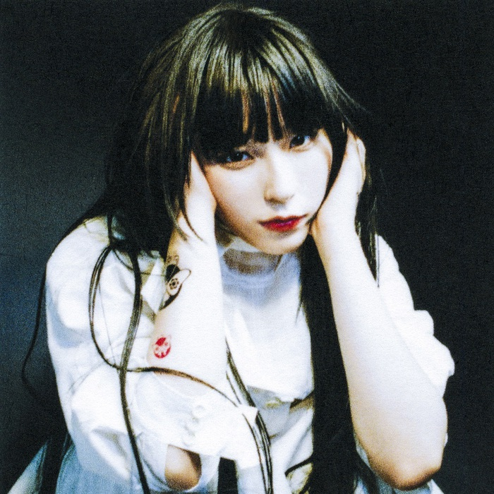DAOKO國中3年級開始在NICONICO動畫的「NICO饒舌」上傳影片。在Jinmenusagi（人面兔子）的邀請下參加樂曲活動，被獨立音樂唱片公司的主持者中意，在升高中的同時與該唱片公司簽約。不過由於嚴厲的校規，在高中的這段期間都是以蒙住臉的方式在活動。
ヨルシカヨルシカ是由以往主要製作Vocaloid的n-buna和參與歌手suis在2017年組成的樂隊，suis的歌聲相當符合他的曲風，清澈通明，而n-buna一直很想運用人聲與樂器來表達「人」的感情。N-buna自己認為在樂隊性質的基礎上，可以說「Yorushika」本身就是一件作品。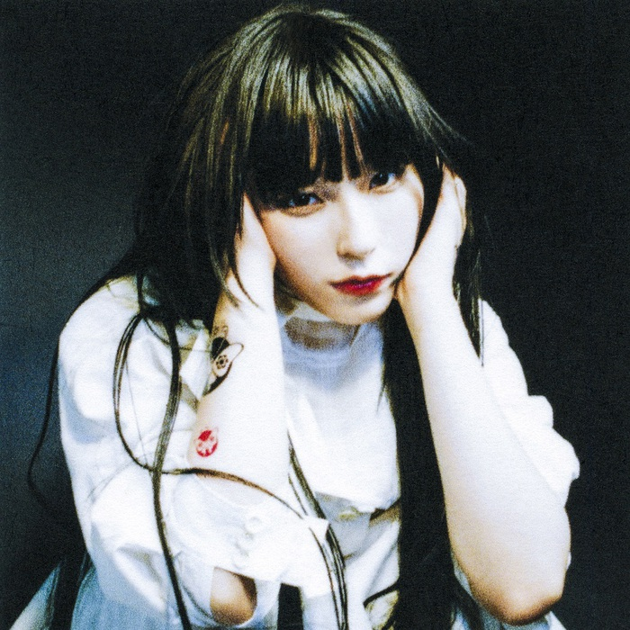DAOKO國中3年級開始在NICONICO動畫的「NICO饒舌」上傳影片。在Jinmenusagi（人面兔子）的邀請下參加樂曲活動，被獨立音樂唱片公司的主持者中意，在升高中的同時與該唱片公司簽約。不過由於嚴厲的校規，在高中的這段期間都是以蒙住臉的方式在活動。